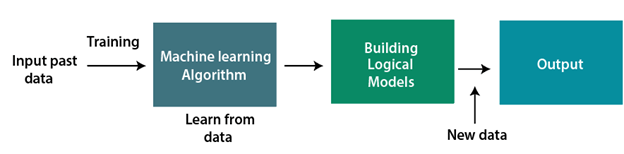

Machine Learning Overview
Machine Learning tutorial provides basic and advanced concepts of machine learning. Our machine learning tutorial is designed for students and working professionals.
Machine learning is a growing technology which enables computers to learn automatically from past data. Machine learning uses various algorithms for building mathematical models and making predictions using historical data or information . Currently, it is being used for various tasks such as image recognition, speech recognition, email filtering, Facebook auto-tagging, recommender system , and many more.
This machine learning tutorial gives you an introduction to machine learning along with the wide range of machine learning techniques such as Supervised ,Unsupervised , and Reinforcement learning. You will learn about regression and classification models, clustering methods, hidden Markov models, and various sequential models.
What is Machine Learning
In the real world, we are surrounded by humans who can learn everything from their experiences with their learning capability, and we have computers or machines which work on our instructions. But can a machine also learn from experiences or past data like a human does? So here comes the role of Machine Learning.

Machine Learning is said as a subset of artificial intelligence that is mainly concerned with the development of algorithms which allow a computer to learn from the data and past experiences on their own. The term machine learning was first introduced by Arthur Samuel in 1959 . We can define it in a summarized way as:
"Machine learning enables a machine to automatically learn from data, improve performance from experiences, and predict things without being explicitly programmed."
With the help of sample historical data, which is known as training data , machine learning algorithms build a mathematical model that helps in making predictions or decisions without being explicitly programmed. Machine learning brings computer science and statistics together for creating predictive models. Machine learning constructs or uses the algorithms that learn from historical data. The more we will provide the information, the higher will be the performance.
A machine has the ability to learn if it can improve its performance by gaining more data.
How does Machine Learning work.
A Machine Learning system learns from historical data, builds the prediction models, and whenever it receives new data, predicts the output for it . The accuracy of predicted output depends upon the amount of data, as the huge amount of data helps to build a better model which predicts the output more accurately. Suppose we have a complex problem, where we need to perform some predictions, so instead of writing a code for it, we just need to feed the data to generic algorithms, and with the help of these algorithms, machine builds the logic as per the data and predict the output. Machine learning has changed our way of thinking about the problem. The below block diagram explains the working of Machine Learning algorithm:

Features of Machine Learning:
- Machine learning uses data to detect various patterns in a given dataset.
- It can learn from past data and improve automatically.
- It is a data-driven technology.
- Machine learning is much similar to data mining as it also deals with the huge amount of the data.